A design system for the product 'TONIC. for advertisers' based on Material design.
The company Team Internet has various products. These products have different target groups and are partly based on different technologies. Future revisions or new interfaces should be based on Material Design. For this purpose, a central design system, the TI-design-system, was created in Figma, including a style guide, which contains all the important components. The product-specific design systems then inherit from this and overwrite adjustments specific to the products. In addition, the product-specific design systems contain individual components that do not apply company-wide.
Each Team Internet product has its own project in Figma. The design systems also have their own project. This includes the company-wide Team Internet Design System (+ style guide) and a separate design system for each product.
Design files in the products then import the TI-design-system and the respective product design system. Importing the TI-design-system is necessary because not all components are revised in the product design systems.
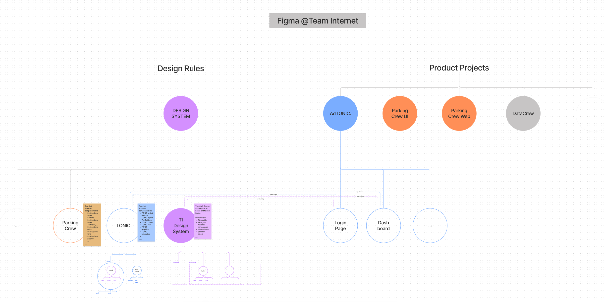
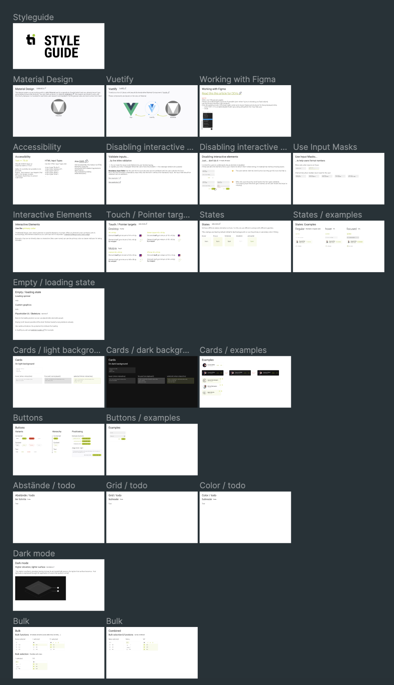
Beginning of the company wide style guide.
For the beginning of the style guide, the most important information from the Material documentation was summarised and added. The style guide was created as a living document to determine what should be included in the style guide in iterative cooperation with the DEVs of the various products. In the process, information requested by the DEVs, unknown concepts or necessary information are gradually added. Examples of styled components are always added as well as links to documentation (such as Material or Vuetify).
Most of the products have existing colours. These were used but very reduced and simplified, as the colours were created for graphic design but are not so extensively needed in material. Colours were defined for both light and dark mode.
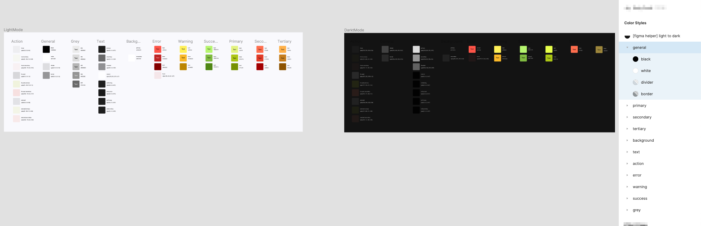
The TI-Designsystem colors for light and dark mode.
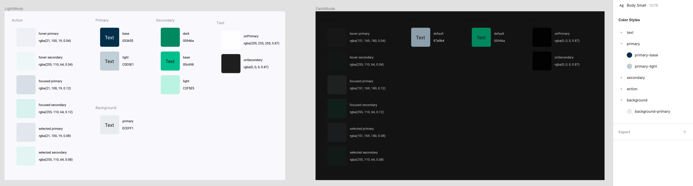
The TONIC-Designsystem colors for light and dark mode.
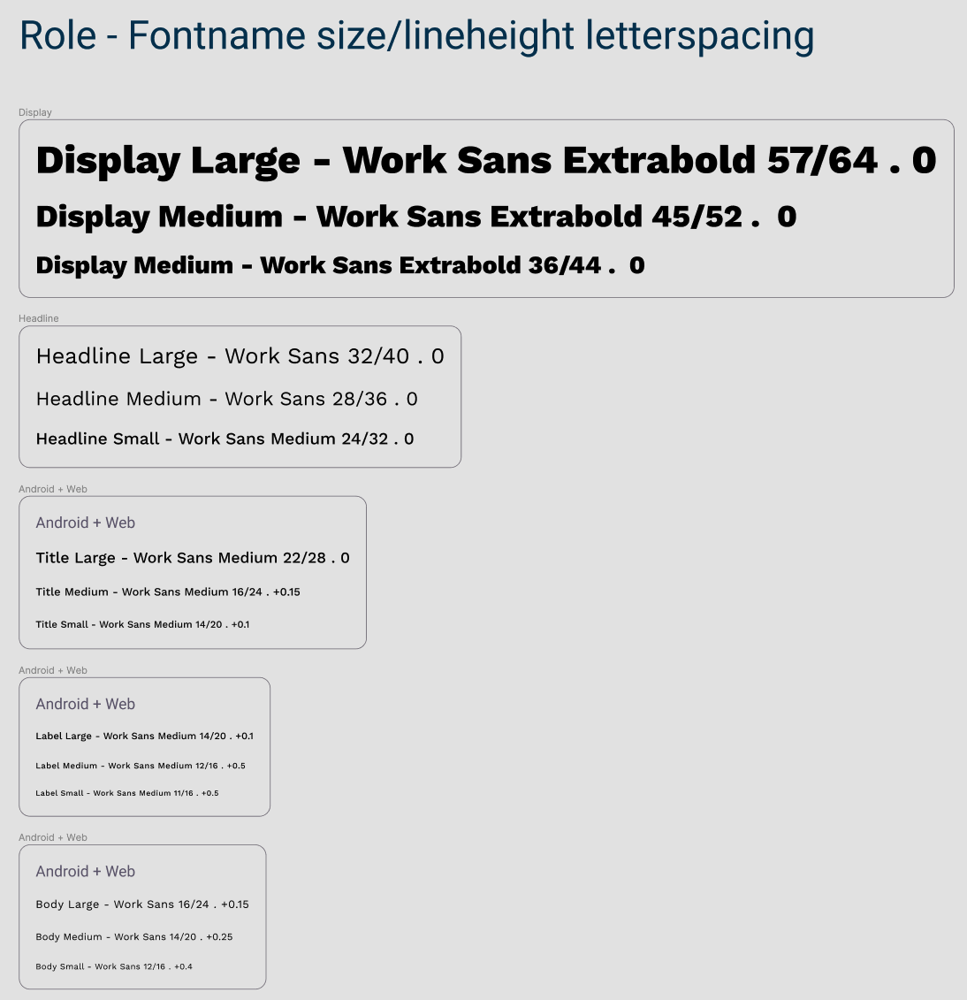
The fonts for the products also existed through previous graphic design. For TONIC, the font (Work Sans) of the existing website was used for short text parts such as headlines. The font structure from material 3 was used because it is more comprehensible than material 2 and defines more clearly what font is used for.
The TI-design-system contains the original components such as buttons, text fields, dialogues, switches, etc. The product-specific components in the respective design systems then 'inherit' from the TI components by wrapping them in new components and overwriting styles such as fonts and colours. Components with variants are used to map all variants of a component. Autolayout is used as far a s possible and useful.
A TONIC. textfield which encapsulates the original TI-textfield with the appropriate variant. In this case, the font and colours were overwritten.
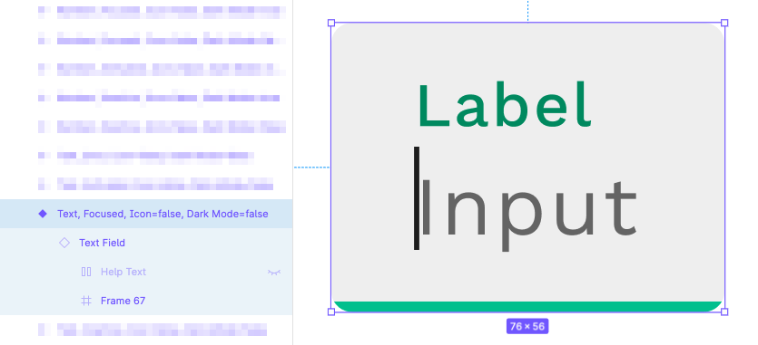
Due to a new Figma update, components can now also contain prototype information and pass it on to the copies. This has been incorporated where it makes sense.
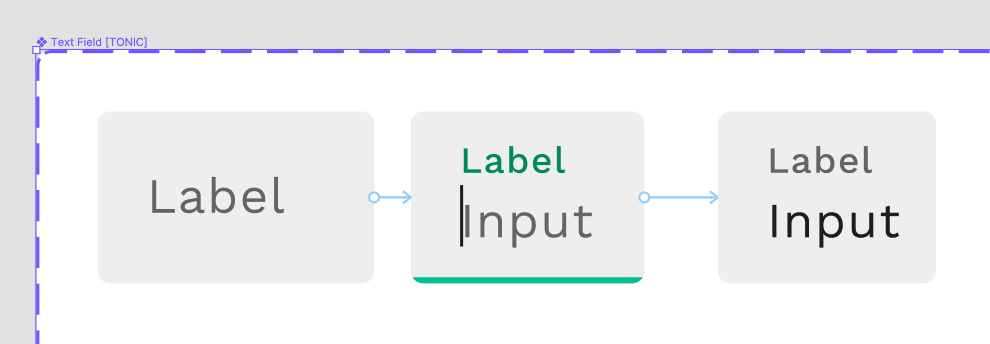
Information in the component names such as [product name] should help to clearly identify components in the asset search.
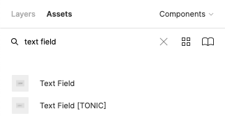
All components have descriptions that contain important information for the DEVs and a link to the style guide or directly to the Material documentation.
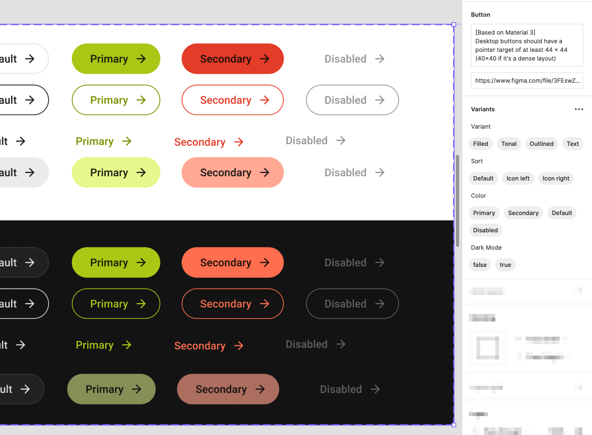
The containers of the different icon variants (outlined vs. rounded) have been given different background colours - which are not visible when importing the respective icons - in order to immediately recognise which icon is needed. Here I have deliberately decided not to use individual components with variants for the icons in order to enable a clear search and selection of the icons.
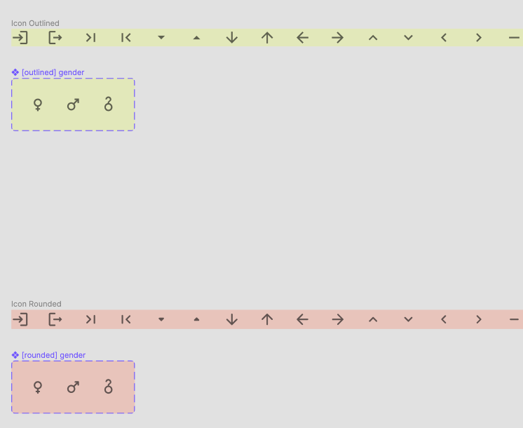
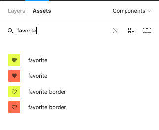
TONIC. has very dark, saturated colours. I therefore used rounded buttons to reduce the harshness and create a modern look. To better distinguish the chips from the buttons, more angular chips were used for TONIC. as presented in material 3.
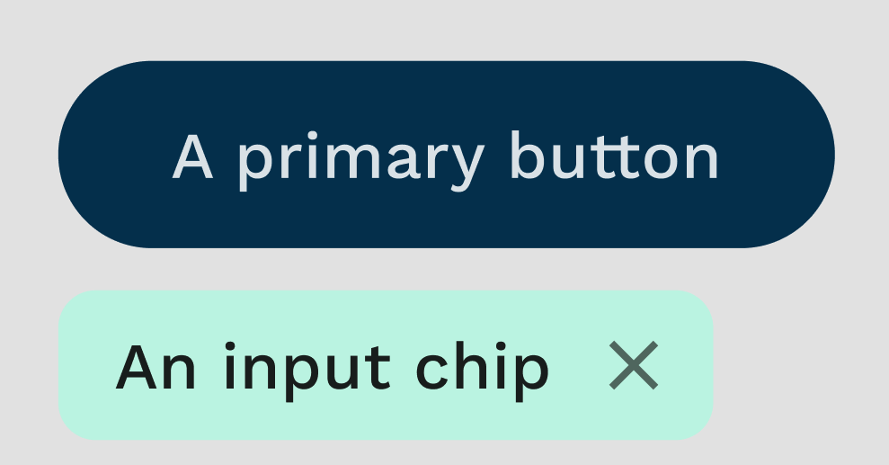